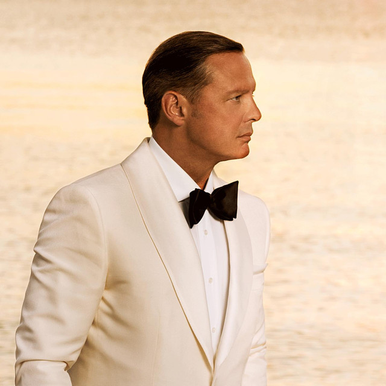
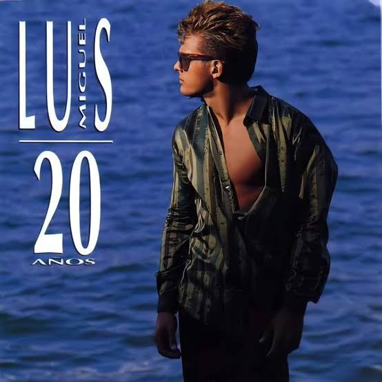
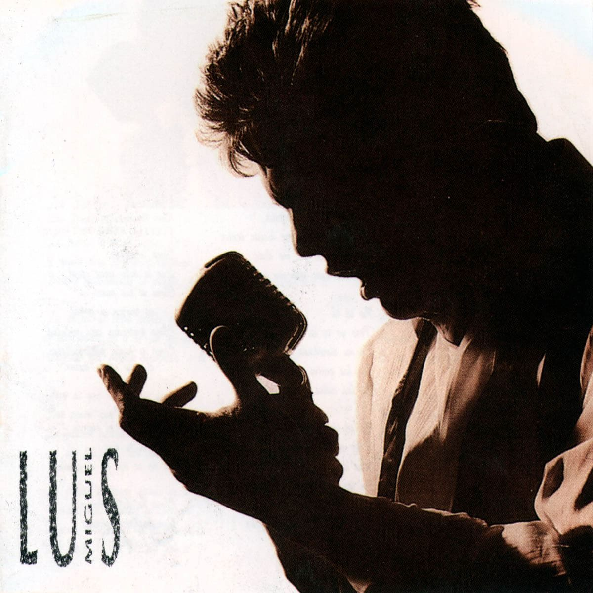
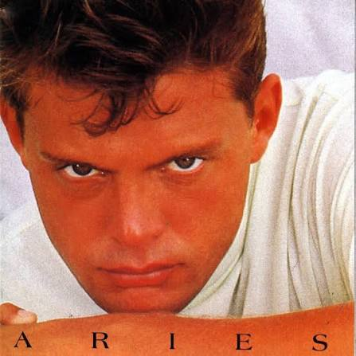

Luis Miguel is one of the most successful Latin American singers of all time. Known for his powerful voice, romantic music and elegant style, he has built an international career in several decades.
Official WebsiteLuis Miguel Gallego Basteri was born on April 19, 1970. He began his professional music career at a very young age and quickly became known for his vocal abilities and stage presence.
Throughout his career, Luis Miguel has explored different musical styles, including pop, bolero, mariachi and romantic music. His album series "Romance" played an important role in popularizing classic Latin romantic songs for a new generation of listeners.
These albums represent some of the most important moments in Luis Miguel's musical career.

Released in 1990, "20 años" introduced a new generation to mixed sounds of classic and pop songs and became one of the best albums of Luis Miguel's career.

Released in 1991, introduce a new generation to classic Latin romantic songs and became one of the defining albums of Luis Miguel career.

Released in 1993, Aries showed a different side of Luis Miguel, combining pop and romantic sounds and demonstrating his versatility as an artist.
This album focuses on Mexican traditional music and features Luis Miguel performing classic mariachi songs.
These are three of my favorite Luis Miguel works because they represent different times of his music and career.